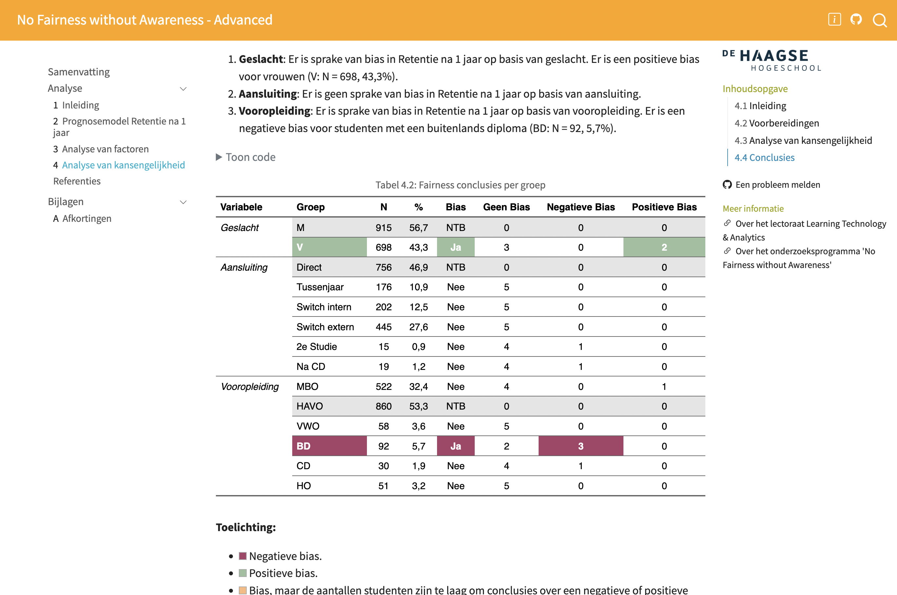
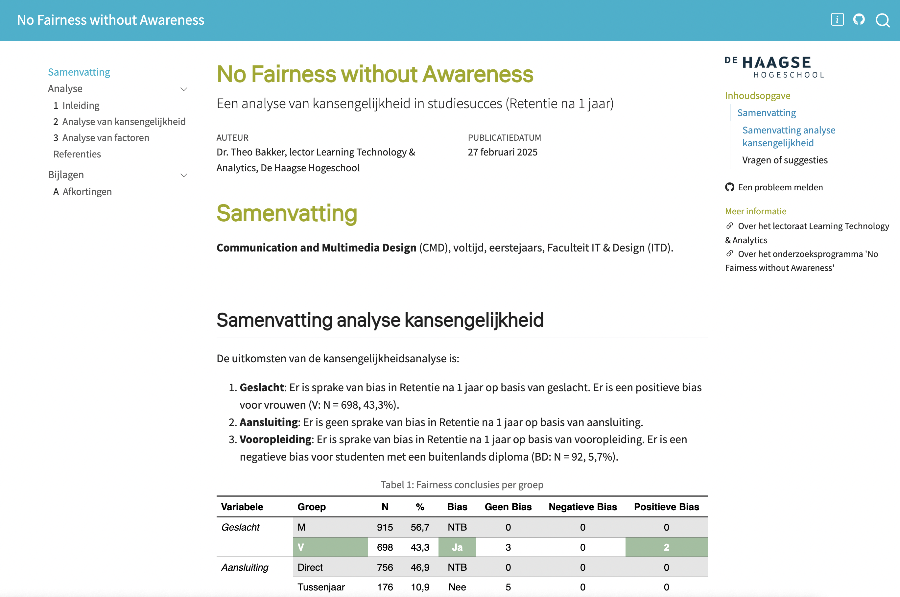

Fairness Awareness: Analysis of Equity in Education
Theo Bakker, The Hague University of Applied Sciences 2025-02-28


This Npuls CEDA 🔗 project makes it possible to create a fairness analysis to study equity (kansengelijkheid) within progression of students in educational institutions in The Netherlands (mbo, hbo, and wo).
Table of contents
🎓 About
This R project offers Dutch educational institutions a template for creating a fairness analysis of students’ progression in educational institutions in The Netherlands. The template is based on the Quarto 🔗 framework and uses the Tidyverse 🔗 coding standard. The template is developed by the Learning Technology & Analytics (LTA) 🔗 research group of The Hague University of Applied Sciences for the Npuls CEDA 🔗 project.
You will have the option to build two reports. The advanced fairness report you will build, will look like this:

The basic fairness report you will build, will look like this:

💡 Why we study fairness, awareness, and equity
The Fairness Awareness Template is based on the concepts of Fairness, Awareness, and Equity. These concepts are essential for the development of a fair educational system. If we don’t study the fairness of our institutions, we can’t be aware of the consequences of our actions in policy, education or student counseling. If we are not aware of the consequences of our actions, we can’t transform unfair educational systems.
We use machine learning (ML) models to understand if there is bias in the progression of students in educational institutions. The fairness of an ML model can be assessed by examining the quality of its predictions for different groups of students expressed in fairness metrics. If the differences in predictions are disproportionally large, this is a sign of bias within the data, unfairness for some groups of students, and inequity.
To learn more about the concepts of Fairness, Awareness, and Equity, read the inaugural speech No Fairness without Awareness 🔗 by Theo Bakker.
🚀 Getting started
These instructions will get you a copy of the project up and running on your local machine for development and testing. See the deployment for notes on deploying the project on a live system.
Prerequisites for stand-alone installations
To start working with this project, make sure you have the following software installed following the links provided, unless you use a paid version of Posit Cloud:
R, Rstudio, Quarto, XQuartz (for Mac only)
- RStudio version 2024.12.0 or higher with R version 4.4.2 or higher - Posit 🔗
- XQuartz 2.8.5 or higher (for Mac only) - XQuartz 🔗
- Quarto version 1.6.39 or higher - Quarto 🔗. Since we use the latest Quarto functionalities, you will need at least this version.
Github, GitHub Desktop
- A Github account and (optionally) GitHub Desktop version 3.4.16 - Github 🔗
GFortran
- GFortran - Fortran 🔗. Fortran is needed to work with several machine-learning packages. Installation will take several minutes. You might have to restart your computer after installation.
R packages, fonts
- Other packages are installed automatically by running the project on your local machine. Instructions are below.
- The installation of the Liter font is optional. Follow the instructions from Google to install this font. - Google 🔗
Prerequisites for Posit Cloud installations
- Login into Posit Cloud and create a
New Project from Git Repository. - Copy and paste the following url https://github.com/LTA-HHs/lta-hhs-fairnessawareness/. That’s it.
Installing
- First, make a fork of the repository to your own Github account. A fork is a copy of the original repository you create in your own GitHub account. This allows you to modify it independently without affecting the original project. Then clone the repository to your local machine using for instance GitHub Desktop. See Cloning a repository 🔗 for an explanation.
- Once you have cloned the repository, open the project in RStudio and run the
_Setup.Rfile by clicking onSource. Don’t change any settings yet. This action will install all the necessary packages and fonts. This installation process will take about 5-10 minutes. - Ignore any inline suggestions at the top of R Studio to install missing packages. Click on
Don't show again - When presented with the following question, choose 1.
It looks like you've called renv::restore() in a project that hasn't been activated yet.
How would you like to proceed?
1: Activate the project and use the project library.
2: Do not activate the project and use the current library paths.
3: Cancel and resolve the situation another way.- Your session will restart. Run the
_Setup.Rfile by clicking onSource. - Answer all questions about installations with Yes (Y or y).
- Once you have all the packages installed, it is best to restart your R session.
📚 Rendering your fairness reports
- Follow the Tutorial to learn more about why we study fairness, and how to create and render your institutional fairness reports.
🔨 Built with
- Quarto 🔗 - The web framework used with
- Tidyverse 🔗 - The R coding standard used.
- Tidymodels 🔗 - The R package used to build the prediction models.
- Dalex 🔗 - The R package used to explain the prediction models and create the fairness analysis. The implementation of the fairness analysis is based on the Fairness 🔗 package.
The LTA-HHs team adjusted the Dalex implementation to improve usability and make it suitable for use in the educational sector in the Netherlands.
🔧 Contributing
In the next version of this template, we will explain how you can contribute to this project. Until then, please get in touch with Theo Bakker if you have any suggestions.
🚦 License
This project is licensed under the Creative Commons Attribution Share Alike 4.0 International.
🔆 Acknowledgments
- We want to thank the developers of Quarto, Tidyverse, Tidymodels and Dalex for their excellent work.
- We want to thank Npuls and CEDA for their support in developing and testing this template.
📌 Known issues
- None
📎 Wishes
- Be able to include logo in _brand.yml for subsequent use in basic.scss.
- Remove Warnings while rendering .qmd files without parameters
📫 Contact
If you have any questions or suggestions, please contact the author of this template: Theo Bakker
To the version history of the template.